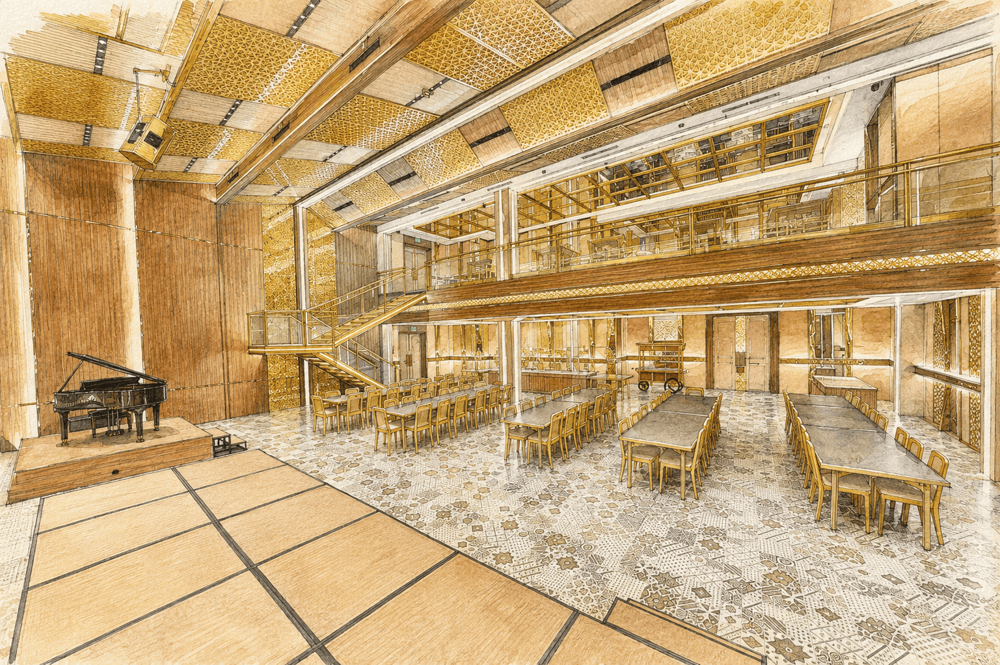
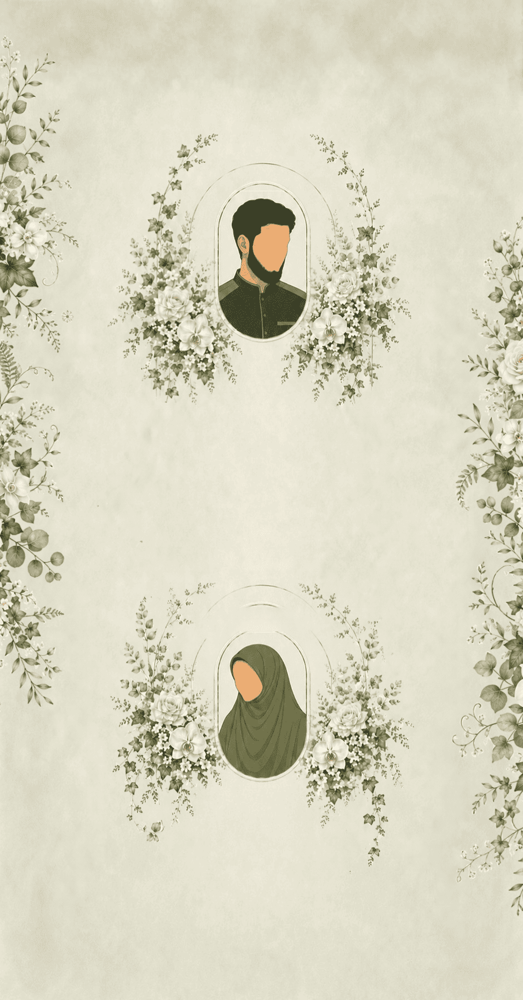
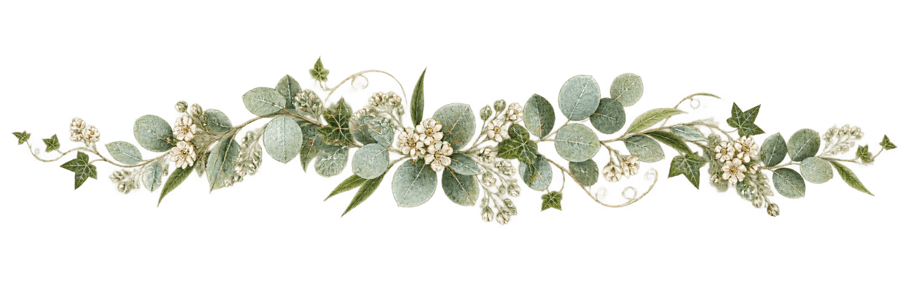
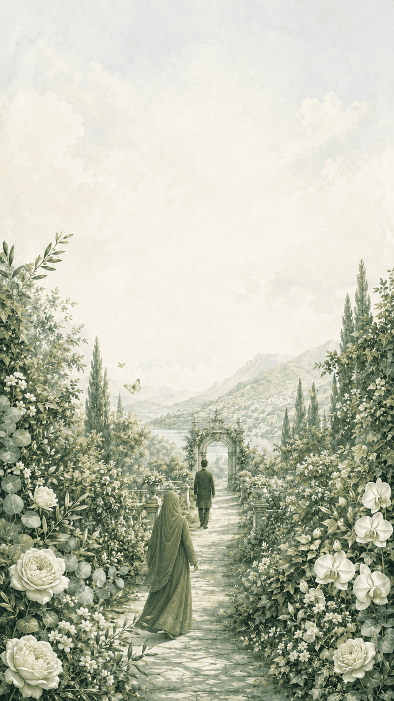

Rangkaian Acara
Akad & Resepsi
- Tanggal
- Kamis, 12 November 2026
- Waktu
- 16.00–21.00 WIB
Lokasi
Leviticus

Jl. Penyelesaian Tomang II No.1 Meruya Utara, Kec. Kembangan Jakarta Barat
MapsKepada Yth.
The Wedding Of
KAMIS, 12 NOVEMBER 2026
وَمِنْ آيَاتِهِ أَنْ خَلَقَ لَكُم مِّنْ أَنفُسِكُمْ أَزْوَاجًا لِّتَسْكُنُوا إِلَيْهَا وَجَعَلَ بَيْنَكُم مَّوَدَّةً وَرَحْمَةً
“Dan di antara tanda-tanda kekuasaan-Nya ialah Dia menciptakan untukmu pasangan hidup dari jenismu sendiri, supaya kamu cenderung dan merasa tenteram kepadanya, dan dijadikan-Nya di antaramu rasa kasih dan sayang.”
QS. Ar-Rum : 21
Bismillahirrahmanirrahim
Tanpa mengurangi rasa hormat dan dengan segala kerendahan hati, kami mengundang Bapak/Ibu/Saudara/i untuk hadir dan memberikan doa restu pada acara pernikahan kami.

MEMPERKENALKAN
Mempelai
Anak kedua dari
Bapak Fahrur Roezi dan Ibu Mirza Syahnaz
Anak pertama dari
Alm. Bapak Sukardi dan Ibu Zakiah
Rangkaian Acara
Lokasi

Jl. Penyelesaian Tomang II No.1 Meruya Utara, Kec. Kembangan Jakarta Barat
Maps
Konfirmasi Kehadiran
Merupakan suatu kehormatan bagi kami apabila Bapak/Ibu/Saudara/i berkenan hadir.
Ucapan & Doa
Titipkan ucapan dan doa terbaik untuk perjalanan baru kami.
Memuat ucapan…

Merupakan suatu kehormatan dan kebahagiaan bagi kami apabila Bapak/Ibu/Saudara/i berkenan hadir dan memberikan doa restu.
Kami yang berbahagia
Muhammad Azamy Saskiah Putri